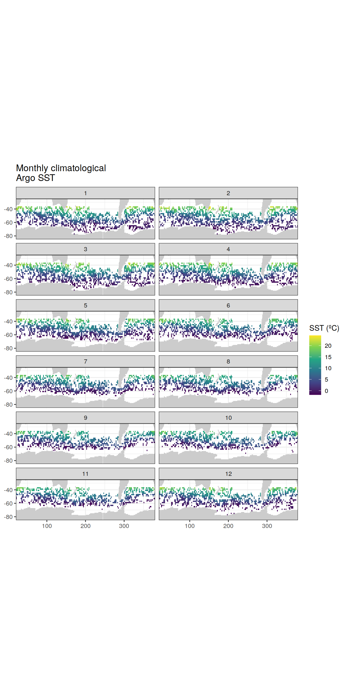
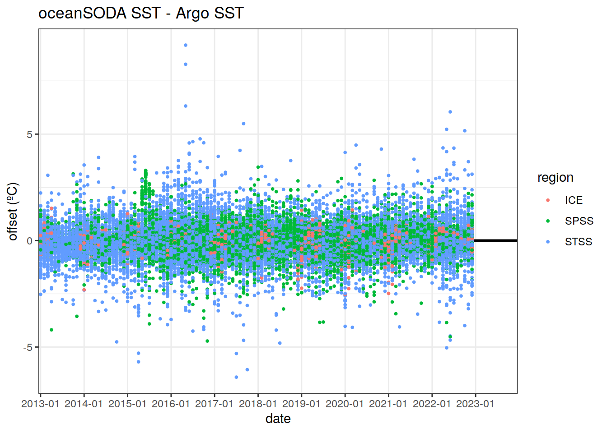
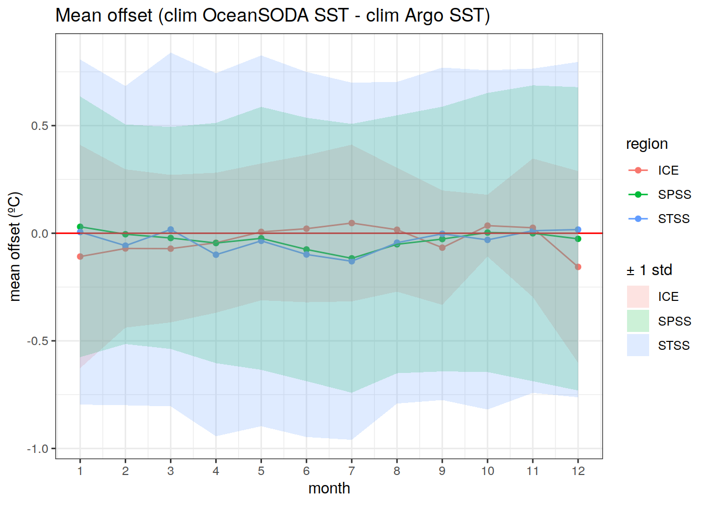
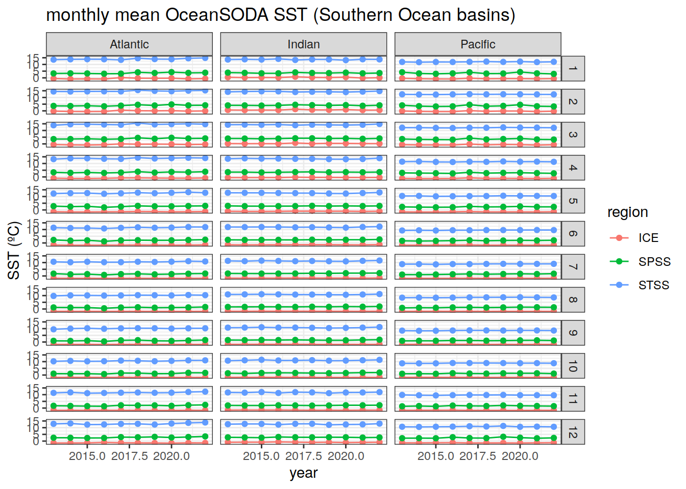

OceanSODA-Argo SST
Pasqualina Vonlanthen & Jens Daniel Müller
28 February, 2022
Last updated: 2022-02-28
Checks: 7 0
Knit directory: bgc_argo_r_argodata/
This reproducible R Markdown analysis was created with workflowr (version 1.7.0). The Checks tab describes the reproducibility checks that were applied when the results were created. The Past versions tab lists the development history.
Great! Since the R Markdown file has been committed to the Git repository, you know the exact version of the code that produced these results.
Great job! The global environment was empty. Objects defined in the global environment can affect the analysis in your R Markdown file in unknown ways. For reproduciblity it’s best to always run the code in an empty environment.
The command set.seed(20211008) was run prior to running the code in the R Markdown file. Setting a seed ensures that any results that rely on randomness, e.g. subsampling or permutations, are reproducible.
Great job! Recording the operating system, R version, and package versions is critical for reproducibility.
Nice! There were no cached chunks for this analysis, so you can be confident that you successfully produced the results during this run.
Great job! Using relative paths to the files within your workflowr project makes it easier to run your code on other machines.
Great! You are using Git for version control. Tracking code development and connecting the code version to the results is critical for reproducibility.
The results in this page were generated with repository version 840030e. See the Past versions tab to see a history of the changes made to the R Markdown and HTML files.
Note that you need to be careful to ensure that all relevant files for the analysis have been committed to Git prior to generating the results (you can use wflow_publish or wflow_git_commit). workflowr only checks the R Markdown file, but you know if there are other scripts or data files that it depends on. Below is the status of the Git repository when the results were generated:
Ignored files:
Ignored: .RData
Ignored: .Rhistory
Ignored: .Rproj.user/
Ignored: analysis/figure/
Ignored: output/
Untracked files:
Untracked: code/OceanSODA_argo_extremes.R
Untracked: code/creating_dataframe.R
Untracked: code/creating_map.R
Untracked: code/merging_oceanSODA_Argo.R
Untracked: code/pH_data_timeseries.R
Note that any generated files, e.g. HTML, png, CSS, etc., are not included in this status report because it is ok for generated content to have uncommitted changes.
These are the previous versions of the repository in which changes were made to the R Markdown (analysis/oceanSODA_argo_temp.Rmd) and HTML (docs/oceanSODA_argo_temp.html) files. If you’ve configured a remote Git repository (see ?wflow_git_remote), click on the hyperlinks in the table below to view the files as they were in that past version.
| File | Version | Author | Date | Message |
|---|---|---|---|---|
| Rmd | 840030e | pasqualina-vonlanthendinenna | 2022-02-28 | removed 2021 from SST comparison |
| html | fd521d1 | pasqualina-vonlanthendinenna | 2022-02-25 | Build site. |
| Rmd | 64c2c71 | pasqualina-vonlanthendinenna | 2022-02-25 | plotted line profiles and changed HNL colors |
| html | 7d7874c | pasqualina-vonlanthendinenna | 2022-02-24 | Build site. |
| Rmd | 58d2846 | pasqualina-vonlanthendinenna | 2022-02-24 | added st dev for temp profiles |
| html | c68163a | pasqualina-vonlanthendinenna | 2022-02-22 | Build site. |
| Rmd | 818ac54 | pasqualina-vonlanthendinenna | 2022-02-22 | updated regression and merging for extreme_temp |
| html | 905d82f | pasqualina-vonlanthendinenna | 2022-02-15 | Build site. |
| Rmd | 01ae9da | pasqualina-vonlanthendinenna | 2022-02-15 | added OceanSODA-Argo SST comparison |
Task
Compare Argo surface temperature to OceanSODA surface temperature
theme_set(theme_bw())Load data
Load in surface Argo temperature, and OceanSODA temperature, on a 1ºx1º grid
path_argo <- '/nfs/kryo/work/updata/bgc_argo_r_argodata'
path_argo_preprocessed <- paste0(path_argo, "/preprocessed_bgc_data")
path_emlr_utilities <- "/nfs/kryo/work/jenmueller/emlr_cant/utilities/files/"# Load in surface Argo and OceanSODA temperature data
OceanSODA_temp <- read_rds(file = paste0(path_argo_preprocessed, "/OceanSODA_temp.rds"))
argo_surf_temp <- read_rds(file = paste0(path_argo_preprocessed, "/bgc_merge_temp_qc_1.rds")) %>%
filter(between(depth, 0, 20)) %>%
mutate(year = year(date),
month = month(date))
# for plotting later, load in region and coastline information
region_masks_all_seamask_2x2 <- read_rds(file = paste0(
path_argo_preprocessed, "/region_masks_all_seamask_2x2.rds"))
region_masks_all_2x2 <- read_rds(file = paste0(path_argo_preprocessed, "/region_masks_all_2x2.rds"))
region_masks_all_1x1 <- read_rds(file = paste0(path_argo_preprocessed, "/region_masks_all_1x1.rds"))# read in the map from updata
map <-
read_rds(paste(path_emlr_utilities,
"map_landmask_WOA18.rds",
sep = ""))Harmonise the two datasets
Calculate monthly-mean Argo temperature for each lat/lon grid and each month
argo_temp_monthly <- argo_surf_temp %>%
mutate(year_month = format_ISO8601(date, precision = "ym"), .after = 'date') %>%
group_by(year, month, year_month, date, lat, lon) %>%
summarise(argo_temp_month = mean(temp_adjusted, na.rm = TRUE)) %>%
ungroup() %>%
select(
date,
year_month,
year,
month,
lon,
lat,
argo_temp_month
)Join Argo and OceanSODA
OceanSODA_temp <- OceanSODA_temp %>%
mutate(year_month = format_ISO8601(date, precision = "ym")) %>%
rename(date_OceanSODA = date)# change date format in OceanSODA to match argo date (yyyy-mm)
argo_OceanSODA_temp <- left_join(argo_temp_monthly, OceanSODA_temp) %>%
rename(OceanSODA_temp = temperature)Southern Ocean SST
Focus on the Southern Ocean, south of 30ºS, as defined in the RECCAP biome regions
region_masks_all_1x1_SO <- region_masks_all_1x1 %>%
filter(region == 'southern',
value != 0)
# keep only Southern Ocean data
argo_OceanSODA_temp_SO <-
inner_join(region_masks_all_1x1_SO, argo_OceanSODA_temp)Monthly climatological OceanSODA SST
Map monthly mean SST from the OceanSODA data product
Climatological OceanSODA SST
# calculate average monthly pH between April 2013 and August 2021, and the difference between the two (offset)
argo_OceanSODA_temp_SO_clim <- argo_OceanSODA_temp_SO %>%
group_by(lon, lat, month) %>%
summarise(
clim_OceanSODA_temp = mean(OceanSODA_temp, na.rm = TRUE),
clim_argo_temp = mean(argo_temp_month, na.rm = TRUE),
offset_clim = clim_OceanSODA_temp - clim_argo_temp
) %>%
ungroup()
# regrid to a 2x2 grid for mapping
argo_OceanSODA_temp_SO_clim_2x2 <- argo_OceanSODA_temp_SO_clim %>%
mutate(
lat = cut(lat, seq(-90, 90, 2), seq(-89, 89, 2)),
lat = as.numeric(as.character(lat)),
lon = cut(lon, seq(20, 380, 2), seq(21, 379, 2)),
lon = as.numeric(as.character(lon))
) %>%
group_by(lon, lat, month) %>%
summarise(
clim_OceanSODA_temp = mean(clim_OceanSODA_temp, na.rm = TRUE),
clim_argo_temp = mean(clim_argo_temp, na.rm = TRUE),
offset_clim = mean(offset_clim, na.rm = TRUE)
) %>%
ungroup()
map +
geom_tile(data = argo_OceanSODA_temp_SO_clim_2x2,
aes(x = lon, y = lat, fill = clim_OceanSODA_temp)) +
lims(y = c(-85, -25)) +
scale_fill_viridis_c() +
labs(x = 'lon',
y = 'lat',
fill = 'SST (ºC)',
title = 'Monthly climatological \nOceanSODA SST (Jan 2013 - Dec 2020)') +
theme(legend.position = 'right') +
facet_wrap(~month, ncol = 2)
| Version | Author | Date |
|---|---|---|
| 905d82f | pasqualina-vonlanthendinenna | 2022-02-15 |
# plot the climatological monthly OceanSODA SST on a polar projection
basemap(limits = -32, data = argo_OceanSODA_temp_SO_clim_2x2) + # change to polar projection
geom_spatial_tile(data = argo_OceanSODA_temp_SO_clim_2x2,
aes(x = lon,
y = lat,
fill = clim_OceanSODA_temp),
linejoin = 'mitre',
col = 'transparent',
detail = 60)+
scale_fill_viridis_c()+
theme(legend.position = 'right')+
labs(x = 'lon',
y = 'lat',
fill = 'SST (ºC)',
title = 'monthly climatological \nOceanSODA SST (Jan 2013 - Dec 2020)')+
facet_wrap(~month, ncol = 2)
| Version | Author | Date |
|---|---|---|
| 905d82f | pasqualina-vonlanthendinenna | 2022-02-15 |
Monthly climatological Argo SST
Climatological Argo SST
map +
geom_tile(data = argo_OceanSODA_temp_SO_clim_2x2,
aes(lon, lat, fill = clim_argo_temp)) +
lims(y = c(-85, -25)) +
scale_fill_viridis_c() +
labs(x = 'lon',
y = 'lat',
fill = 'SST (ºC)',
title = 'Monthly climatological \nArgo SST (Jan 2013 - Dec 2021)') +
theme(legend.position = 'right') +
facet_wrap(~month, ncol = 2)
| Version | Author | Date |
|---|---|---|
| 905d82f | pasqualina-vonlanthendinenna | 2022-02-15 |
basemap(limits = -32, data = argo_OceanSODA_temp_SO_clim_2x2) + # change to polar projection
geom_spatial_tile(data = argo_OceanSODA_temp_SO_clim_2x2,
aes(x = lon,
y = lat,
fill = clim_argo_temp),
linejoin = 'mitre',
col = 'transparent',
detail = 60)+
scale_fill_viridis_c()+
theme(legend.position = 'right')+
labs(x = 'lon',
y = 'lat',
fill = 'SST (ºC)',
title = 'monthly climatological \nArgo SST (Jan 2013 - Dec 2021)')+
facet_wrap(~month, ncol = 2)
| Version | Author | Date |
|---|---|---|
| 905d82f | pasqualina-vonlanthendinenna | 2022-02-15 |
Timeseries of monthly OceanSODA SST
Evolution of monthly SST, for the three Southern Ocean RECCAP regions
map +
geom_raster(data = region_masks_all_seamask_2x2 %>%
filter(seamask == 0),
aes(x = lon, y = lat)) +
geom_raster(data = region_masks_all_2x2 %>%
filter(region == 'southern',
value != 0),
aes(x = lon,
y = lat,
fill = value)) +
labs(title = 'Southern Ocean RECCAP regions',
fill = 'region')
# plot timeseries of monthly OceanSODA pH
argo_OceanSODA_temp_SO_clim_regional <- argo_OceanSODA_temp_SO %>%
select(year, month, value, OceanSODA_temp, argo_temp_month) %>%
pivot_longer(c(OceanSODA_temp,argo_temp_month),
values_to = "temp",
names_to = "data_source") %>%
group_by(year, month, value, data_source) %>% # compute regional mean OceanSODA pH for the three biomes
summarise(temp = mean(temp, na.rm = TRUE)) %>%
ungroup()argo_OceanSODA_temp_SO_clim_regional %>%
ggplot(aes(x = year,
y = temp,
col = value)) +
facet_grid(month ~ data_source) +
geom_line() +
geom_point() +
labs(x = 'year',
y = 'SST (ºC)',
title = 'monthly mean SST (Jan 2013-Dec 2021, Southern Ocean)',
col = 'region')argo_OceanSODA_temp_SO_clim_regional %>%
filter(value != 0,
year != 2021) %>%
ggplot(aes(x = month,
y = temp,
group = year,
col = as.character(year)))+
geom_line()+
geom_point()+
scale_x_continuous(breaks = seq(1, 12, 2))+
facet_grid(value~data_source)+
lims(y = c(-5, 20))+
labs(x = 'month',
y = 'SST (ºC)',
title = 'monthly mean SST (Jan 2013-Dec 2021, Southern Ocean)',
col = 'year')
Comparison between Argo and OceanSODA SST
Calculate the difference between Argo and OceanSODA SST values
Offset between in-situ monthly pH:
argo_OceanSODA_temp_SO <- argo_OceanSODA_temp_SO %>%
mutate(offset = OceanSODA_temp - argo_temp_month)
argo_OceanSODA_temp_SO %>%
# drop_na() %>%
# filter(year != '2021') %>%
ggplot() +
geom_hline(yintercept = 0, size = 1)+
geom_point(aes(x = year_month, y = offset, col = value), size = 0.7, pch = 19) +
scale_x_discrete(breaks = c('2013-01', '2014-01', '2015-01', '2016-01', '2017-01', '2018-01', '2019-01', '2020-01'))+
labs(title = 'oceanSODA SST - Argo SST',
x = 'date',
y = 'offset (ºC)',
col = 'region')
| Version | Author | Date |
|---|---|---|
| 905d82f | pasqualina-vonlanthendinenna | 2022-02-15 |
argo_OceanSODA_temp_SO %>%
# drop_na() %>%
ggplot(aes(x = OceanSODA_temp, y = argo_temp_month))+
# geom_point(pch = 19, size = 0.7)+
geom_bin2d(aes(x = OceanSODA_temp, y = argo_temp_month), size = 0.3, bins = 60)+
coord_fixed(ratio = 1,
xlim = c(-3, 27),
ylim= c(-3, 27)) +
geom_abline(slope = 1, intercept = 0)+
facet_wrap(~value)+
labs(x = 'OceanSODA SST (ºC)',
y = 'Argo SST (ºC)',
title = 'Southern Ocean regional SST')
| Version | Author | Date |
|---|---|---|
| 905d82f | pasqualina-vonlanthendinenna | 2022-02-15 |
# test with basin and biome
basinmask <-
read_csv(paste(path_emlr_utilities,
"basin_mask_WOA18.csv",
sep = ""),
col_types = cols("MLR_basins" = col_character()))
basinmask <- basinmask %>%
filter(MLR_basins == unique(basinmask$MLR_basins)[1]) %>%
select(lon, lat, basin_AIP)
argo_OceanSODA_temp_SO <- inner_join(argo_OceanSODA_temp_SO, basinmask)
argo_OceanSODA_temp_SO %>%
ggplot(aes(x = OceanSODA_temp, y = argo_temp_month))+
geom_bin2d(aes(x = OceanSODA_temp, y = argo_temp_month), size = 0.3, bins = 60)+
coord_fixed(ratio = 1,
xlim = c(-3, 27),
ylim = c(-3, 27))+
geom_abline(slope = 1, intercept = 0)+
facet_grid(basin_AIP~value)+
labs(x = 'Argo SST (ºC)',
y = 'OceanSODA SST (ºC)',
title = 'Southern Ocean subregional SST')
| Version | Author | Date |
|---|---|---|
| c68163a | pasqualina-vonlanthendinenna | 2022-02-22 |
Mean offset between in-situ OceanSODA SST and in-situ Argo SST
mean_insitu_offset <- argo_OceanSODA_temp_SO %>%
group_by(year_month, value) %>%
summarise(mean_offset = mean(offset, na.rm = TRUE),
std_offset = sd(offset, na.rm = TRUE))
mean_insitu_offset %>%
# drop_na() %>%
# filter(year != '2021') %>%
ggplot() +
geom_hline(yintercept = 0, size = 1, col = 'red')+
geom_point(aes(x = year_month, y = mean_offset, group = value, col = value), size = 0.7, pch = 19) +
geom_line(aes(x = year_month, y = mean_offset, group = value, col = value))+
geom_ribbon(aes(x = year_month,
ymin = mean_offset-std_offset,
ymax = mean_offset+std_offset,
group = value,
fill =value),
alpha = 0.2)+
scale_x_discrete(breaks = c('2013-01', '2014-01', '2015-01', '2016-01', '2017-01', '2018-01', '2019-01', '2020-01'))+
# facet_wrap(~year)+
labs(title = 'Mean offset (in situ oceanSODA SST - in situ Argo SST)',
x = 'date',
y = 'offset (ºC)',
col = 'region',
fill = '± 1 std')
Offset between climatological Argo and climatological OceanSODA SST:
# Offset between climatological argo and climatological OceanSODA SST
argo_OceanSODA_temp_SO_clim <- inner_join(argo_OceanSODA_temp_SO_clim, region_masks_all_1x1_SO)argo_OceanSODA_temp_SO_clim %>%
# drop_na() %>%
ggplot() +
geom_point(aes(x = month, y = offset_clim, col = value), size = 0.7, pch = 19) +
geom_hline(yintercept = 0, size = 1, col = 'red')+
scale_x_continuous(breaks = seq(1, 12, 1))+
labs(title = 'clim oceanSODA SST - clim Argo SST',
x = 'month',
y = 'offset (ºC)',
col = 'region')Mean offset between climatological OceanSODA SST and climatological Argo SST
mean_clim_offset <- argo_OceanSODA_temp_SO_clim %>%
group_by(month, value) %>%
summarise(mean_offset_clim = mean(offset_clim, na.rm = TRUE),
std_offset_clim = sd(offset_clim, na.rm = TRUE))
mean_clim_offset %>%
ggplot()+
geom_point(aes(x = month, y = mean_offset_clim, col = value))+
geom_line(aes(x = month, y = mean_offset_clim, col = value))+
geom_hline(yintercept = 0, col = 'red') +
geom_ribbon(aes(x = month,
ymin = mean_offset_clim - std_offset_clim,
ymax = mean_offset_clim + std_offset_clim,
group = value,
fill = value),
alpha = 0.2) +
scale_x_continuous(breaks = seq(1, 12, 1)) +
labs(x = 'month',
y = 'mean offset (ºC)',
title = 'Mean offset (clim OceanSODA SST - clim Argo SST)',
col = 'region',
fill = '± 1 std') 
| Version | Author | Date |
|---|---|---|
| 905d82f | pasqualina-vonlanthendinenna | 2022-02-15 |
Mapped offset between climatological OceanSODA pH and climatological Argo pH
# bin the offsets for better plotting
# plot the offsets on a map of the Southern Ocean
argo_OceanSODA_temp_SO_clim_2x2 <- argo_OceanSODA_temp_SO_clim_2x2 %>%
mutate(offset_clim_binned =
cut(offset_clim,
breaks = c(-Inf, -0.025, -0.005, 0.000, 0.005, 0.025, 0.035, 0.05, Inf))) # bin the offsets into intervals (create a discrete variable instead of continuous)
# offset_clim_binned = as.factor(as.character(offset_clim_binned))) %>%
# drop_na()
map +
geom_tile(data = argo_OceanSODA_temp_SO_clim_2x2,
aes(lon, lat, fill = offset_clim_binned)) +
lims(y = c(-85, -30)) +
scale_fill_brewer(palette = 'RdBu', drop = FALSE) +
labs(x = 'lon',
y = 'lat',
fill = 'offset (ºC)',
title = 'clim OceanSODA SST - clim Argo SST') +
theme(legend.position = 'right')+
facet_wrap(~month, ncol = 2)
| Version | Author | Date |
|---|---|---|
| 905d82f | pasqualina-vonlanthendinenna | 2022-02-15 |
basemap(limits = -32, data = argo_OceanSODA_temp_SO_clim_2x2) + # change to polar projection
geom_spatial_tile(data = argo_OceanSODA_temp_SO_clim_2x2,
aes(x = lon,
y = lat,
fill = offset_clim_binned),
linejoin = 'mitre',
col = 'transparent',
detail = 60)+
scale_fill_brewer(palette = 'RdBu', drop = FALSE)+
theme(legend.position = 'right')+
labs(x = 'lon',
y = 'lat',
fill = 'offset (ºC)',
title = 'clim Ocean SODA SST - clim Argo SST')+
facet_wrap(~month, ncol = 2)
| Version | Author | Date |
|---|---|---|
| 905d82f | pasqualina-vonlanthendinenna | 2022-02-15 |
Basin separation
Using full OceanSODA data (even where there is no Argo data) Each RECCAP biome (1, 2, 3) is separated into basins (Atlantic, Pacific, Indian)
basinmask <-
read_csv(paste(path_emlr_utilities,
"basin_mask_WOA18.csv",
sep = ""),
col_types = cols("MLR_basins" = col_character()))
basinmask <- basinmask %>%
filter(MLR_basins == unique(basinmask$MLR_basins)[1]) %>%
select(lon, lat, basin_AIP)
OceanSODA_temp_SO <- inner_join(OceanSODA_temp, region_masks_all_1x1) %>%
filter(region == 'southern')
OceanSODA_temp_SO <- inner_join(OceanSODA_temp_SO, basinmask) %>%
mutate(year = year(date_OceanSODA),
month = month(date_OceanSODA)) %>%
mutate(date = format_ISO8601(date_OceanSODA, precision = 'ym'))# plot timeseries of monthly OceanSODA SST
OceanSODA_temp_SO_clim_subregional <- OceanSODA_temp_SO %>%
filter(value != 0) %>%
group_by(year, month, value, basin_AIP) %>% # compute regional mean OceanSODA pH for the three biomes
summarise(temp = mean(temperature, na.rm = TRUE)) %>%
ungroup()
# plot a timeseries of monthly average OceanSODA pH, per region and per basin
OceanSODA_temp_SO_clim_subregional %>%
ggplot(aes(x = month,
y = temp,
group = year,
col = as.character(year)))+
geom_line()+
geom_point()+
scale_x_continuous(breaks = seq(1, 12, 2))+
facet_grid(value~basin_AIP)+
labs(x = 'month',
y = 'SST (ºC)',
title = 'monthly mean OceanSODA SST (Jan 2013-Dec 2020, Southern Ocean basins)',
col = 'year')
| Version | Author | Date |
|---|---|---|
| 905d82f | pasqualina-vonlanthendinenna | 2022-02-15 |
OceanSODA_temp_SO_clim_subregional %>%
filter(value != 0) %>%
ggplot(aes(x = year,
y = temp,
col = value)) +
facet_grid(month ~ basin_AIP) +
geom_line() +
geom_point() +
labs(x = 'year',
y = 'SST (ºC)',
title = 'monthly mean OceanSODA SST (Jan 2013-Dec 2020, Southern Ocean basins)',
col = 'region')
| Version | Author | Date |
|---|---|---|
| 905d82f | pasqualina-vonlanthendinenna | 2022-02-15 |
Longitudinal separation
Bin the SST data into 20º longitude bins
OceanSODA_temp_SO_lon_binned <- OceanSODA_temp_SO %>%
mutate(lon = cut(lon, seq(20, 380, 20), seq(30, 370, 20)),
lon = as.numeric(as.character(lon))
) %>%
group_by(lon, year, month, value) %>%
summarise(
OceanSODA_temp_binned = mean(temperature, na.rm = TRUE)
) %>%
ungroup()OceanSODA_temp_SO_lon_binned %>%
# drop_na() %>%
filter(value != 0) %>%
ggplot(aes(x = month, y = OceanSODA_temp_binned, group = lon, col = as.factor(lon))) +
geom_line()+
geom_point()+
scale_x_continuous(breaks = seq(1, 12, 2))+
facet_grid(year~value)+
labs(x = 'month',
y = 'OceanSODA SST (ºC)',
col = 'longitude bin')
| Version | Author | Date |
|---|---|---|
| 905d82f | pasqualina-vonlanthendinenna | 2022-02-15 |
sessionInfo()R version 4.1.2 (2021-11-01)
Platform: x86_64-pc-linux-gnu (64-bit)
Running under: openSUSE Leap 15.3
Matrix products: default
BLAS: /usr/local/R-4.1.2/lib64/R/lib/libRblas.so
LAPACK: /usr/local/R-4.1.2/lib64/R/lib/libRlapack.so
locale:
[1] LC_CTYPE=en_US.UTF-8 LC_NUMERIC=C
[3] LC_TIME=en_US.UTF-8 LC_COLLATE=en_US.UTF-8
[5] LC_MONETARY=en_US.UTF-8 LC_MESSAGES=en_US.UTF-8
[7] LC_PAPER=en_US.UTF-8 LC_NAME=C
[9] LC_ADDRESS=C LC_TELEPHONE=C
[11] LC_MEASUREMENT=en_US.UTF-8 LC_IDENTIFICATION=C
attached base packages:
[1] stats graphics grDevices utils datasets methods base
other attached packages:
[1] metR_0.11.0 ggOceanMaps_1.2.6 ggspatial_1.1.5 lubridate_1.8.0
[5] forcats_0.5.1 stringr_1.4.0 dplyr_1.0.7 purrr_0.3.4
[9] readr_2.1.1 tidyr_1.1.4 tibble_3.1.6 ggplot2_3.3.5
[13] tidyverse_1.3.1 workflowr_1.7.0
loaded via a namespace (and not attached):
[1] fs_1.5.2 sf_1.0-5 bit64_4.0.5
[4] RColorBrewer_1.1-2 httr_1.4.2 rprojroot_2.0.2
[7] tools_4.1.2 backports_1.4.1 bslib_0.3.1
[10] utf8_1.2.2 rgdal_1.5-28 R6_2.5.1
[13] KernSmooth_2.23-20 rgeos_0.5-9 DBI_1.1.2
[16] colorspace_2.0-2 raster_3.5-11 withr_2.4.3
[19] sp_1.4-6 tidyselect_1.1.1 processx_3.5.2
[22] bit_4.0.4 compiler_4.1.2 git2r_0.29.0
[25] cli_3.1.1 rvest_1.0.2 xml2_1.3.3
[28] labeling_0.4.2 sass_0.4.0 checkmate_2.0.0
[31] scales_1.1.1 classInt_0.4-3 ggOceanMapsData_1.0.1
[34] callr_3.7.0 proxy_0.4-26 digest_0.6.29
[37] rmarkdown_2.11 pkgconfig_2.0.3 htmltools_0.5.2
[40] highr_0.9 dbplyr_2.1.1 fastmap_1.1.0
[43] rlang_0.4.12 readxl_1.3.1 rstudioapi_0.13
[46] farver_2.1.0 jquerylib_0.1.4 generics_0.1.1
[49] jsonlite_1.7.3 vroom_1.5.7 magrittr_2.0.1
[52] Rcpp_1.0.8 munsell_0.5.0 fansi_1.0.2
[55] lifecycle_1.0.1 terra_1.5-12 stringi_1.7.6
[58] whisker_0.4 yaml_2.2.1 grid_4.1.2
[61] parallel_4.1.2 promises_1.2.0.1 crayon_1.4.2
[64] lattice_0.20-45 haven_2.4.3 hms_1.1.1
[67] knitr_1.37 ps_1.6.0 pillar_1.6.4
[70] codetools_0.2-18 reprex_2.0.1 glue_1.6.0
[73] evaluate_0.14 getPass_0.2-2 data.table_1.14.2
[76] modelr_0.1.8 vctrs_0.3.8 tzdb_0.2.0
[79] httpuv_1.6.5 cellranger_1.1.0 gtable_0.3.0
[82] assertthat_0.2.1 xfun_0.29 broom_0.7.11
[85] e1071_1.7-9 later_1.3.0 viridisLite_0.4.0
[88] class_7.3-20 units_0.7-2 ellipsis_0.3.2